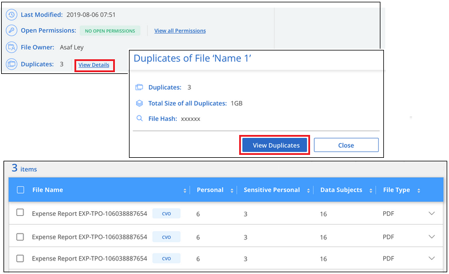

リリースノート
リリースノート
組織に保存されているデータを調査します
 変更を提案
変更を提案
[データ調査]ページで詳細を表示すると、組織のデータを調査できます。このページには、ガバナンスダッシュボードやコンプライアンスダッシュボードなど、BlueXPの分類UIのさまざまな領域から移動できます。

|
このセクションで説明する機能は、データソースに対して完全な分類スキャンを実行することを選択した場合にのみ使用できます。マッピングのみのスキャンを実行したデータソースでは、ファイルレベルの詳細は表示されません。 |
[Data Investigation]ページでのデータのフィルタリング
調査ページの内容をフィルタリングして、表示する結果のみを表示できます。これは非常に強力な機能です。データをリファインした後、ページ上部のボタンバーを使用して、ファイルのコピー、ファイルの移動、ファイルへのタグまたはAIPラベルの追加など、さまざまなアクションを実行できます。
ページをリファインした後で、そのページの内容をレポートとしてダウンロードする場合は、をクリックします  ボタン"] ボタンを押します。 データ調査レポートの詳細については、こちらをご覧ください。
ボタン"] ボタンを押します。 データ調査レポートの詳細については、こちらをご覧ください。

-
トップレベルのタブでは、ファイル（非構造化データ）、ディレクトリ（フォルダおよびファイル共有）、またはデータベース（構造化データ）のデータを表示できます。
-
各列の上部にあるコントロールを使用して、結果を数値またはアルファベット順に並べ替えることができます。
-
左側のペインフィルタを使用すると、以降のセクションで説明する属性を選択して、結果を絞り込むことができます。
感度と内容でデータをフィルタリングします
データに含まれている機密情報の量を表示するには、次のフィルタを使用します。
| フィルタ | 詳細 |
|---|---|
カテゴリ |
を選択します "カテゴリのタイプ"。 |
感度レベル |
感度レベルを選択します。個人レベル、個人レベル、または非機密レベルを選択します。 |
IDの数 |
検出された機密識別子のファイルごとの範囲を選択します。個人データと機密性の高い個人データが含まれます。ディレクトリでフィルタリングする場合、BlueXPの分類では、各フォルダ（およびサブフォルダ）内のすべてのファイルに一致するものが合計されます。 |
個人データ |
を選択します "個人データの種類"。 |
機密性の高い個人データ |
を選択します "機密性の高い個人データのタイプ"。 |
データの件名 |
データ主体のフルネームまたは既知の識別子を入力します "データ主体の詳細については、こちらをご覧ください"。 |
ユーザの所有者とユーザの権限でデータをフィルタリングします
次のフィルタを使用して、ファイルの所有者とデータにアクセスするための権限を表示します。
| フィルタ | 詳細 |
|---|---|
[ アクセス許可 ] を開きます |
データ内およびフォルダ/共有内の権限のタイプを選択します。 |
ユーザ / グループの権限 |
1つ以上のユーザ名またはグループ名を選択するか、または名前の一部を入力してください。 |
ファイルの所有者 |
ファイル所有者名を入力します。 |
アクセス権を持つユーザの数 |
1つまたは複数のカテゴリ範囲を選択して、特定の数のユーザーに対してどのファイルおよびフォルダが開かれているかを表示します。 |
時間でデータをフィルタリングします
次のフィルタを使用して、条件に基づいてデータを表示します。
| フィルタ | 詳細 |
|---|---|
作成時刻（ Created Time ） |
ファイルを作成したときの期間を選択します。カスタムの期間を指定して、検索結果をさらに絞り込むこともできます。 |
検出時刻 |
BlueXPの分類でファイルが検出された期間を選択します。カスタムの期間を指定して、検索結果をさらに絞り込むこともできます。 |
最終更新日 |
ファイルが最後に変更された時間範囲を選択します。カスタムの期間を指定して、検索結果をさらに絞り込むこともできます。 |
最後にアクセスした |
ファイルまたはディレクトリ（CIFSまたはNFSのみ）が最後にアクセスされた時間範囲を選択します。カスタムの期間を指定して、検索結果をさらに絞り込むこともできます。BlueXP分類でスキャンされるファイルの種類については、BlueXP分類でファイルがスキャンされるのはこれが最後です。 BlueXPの分類では、SharePoint Online、SharePointオンプレミス（SharePoint Server）、OneDrive、Google Drive、Amazon S3の各データソースから「最終アクセス時刻」は抽出されません。 |
メタデータでデータをフィルタリングします
次のフィルタを使用して、場所、サイズ、およびディレクトリまたはファイルタイプに基づいてデータを表示します。
| フィルタ | 詳細 |
|---|---|
ファイルパス |
クエリに含めるか除外するパスの一部または全部を20個まで入力します。対象パスと除外パスの両方を入力すると、対象パス内のすべてのファイルが最初に検出され、除外パスからファイルが削除されて結果が表示されます。このフィルタで「*」を使用しても効果はなく、特定のフォルダをスキャンから除外することはできません。設定された共有の下にあるすべてのディレクトリとファイルがスキャンされます。 |
ディレクトリタイプ（Directory Type） |
ディレクトリタイプとして「共有」または「フォルダ」を選択します。 |
ファイルタイプ |
を選択します "ファイルのタイプ"。 |
ファイルサイズ |
ファイルサイズの範囲を選択します。 |
ファイル・ハッシュ |
ファイルのハッシュを入力し、名前が異なる場合でも特定のファイルを検索します。 |
ストレージタイプでデータをフィルタリングします
ストレージタイプ別にデータを表示するには、次のフィルタを使用します。
| フィルタ | 詳細 |
|---|---|
作業環境タイプ（ Working Environment Type ） |
作業環境のタイプを選択します。OneDrive、SharePoint、Google Driveは、[アプリ]に分類されます。 |
作業環境名 |
特定の作業環境を選択します。 |
ストレージリポジトリ |
ボリュームやスキーマなどのストレージリポジトリを選択します。 |
タグ、ラベル、割り当てられたユーザ、およびポリシーでデータをフィルタリングします
AIPラベルまたはタグでデータを表示するには、次のフィルタを使用します。
| フィルタ | 詳細 |
|---|---|
ポリシー |
ポリシーを選択します。実行します "こちらをご覧ください" をクリックして、既存のポリシーのリストを表示し、独自のカスタムポリシーを作成します。 |
ラベル |
選択するオプション "AIP ラベル" ファイルに割り当てられます。 |
タグ |
選択するオプション "タグ" ファイルに割り当てられます。 |
割り当て先 |
ファイルが割り当てられているユーザーの名前を選択します。 |
分析ステータスでデータをフィルタリングします
次のフィルタを使用して、BlueXPの分類スキャンステータス別にデータを表示します。
| フィルタ | 詳細 |
|---|---|
解析ステータス（Analysis Status） |
オプションを選択して、[最初のスキャン保留中]、[スキャン完了]、[再スキャン保留中]、または[スキャンに失敗しました]のファイルのリストを表示します。 |
スキャン分析イベント |
BlueXPの分類で最終アクセス時刻を復元できなかったために分類されなかったファイルを表示するか、BlueXPの分類で最終アクセス時刻を復元できなかったにもかかわらず分類されたファイルを表示するかを選択します。 |
"「最終アクセス時刻」のタイムスタンプの詳細を参照してください" スキャン分析イベントを使用してフィルタリングするときに[Investigation]ページに表示される項目の詳細については、を参照してください。
重複でデータをフィルタリングします
ストレージ内で複製されているファイルを表示するには、次のフィルタを使用します。
| フィルタ | 詳細 |
|---|---|
重複 |
リポジトリ内でファイルを複製するかどうかを選択します。 |
ファイルメタデータの表示
[ データ調査結果 ] ペインで、をクリックできます  をクリックすると、単一のファイルについてファイルのメタデータが表示されます。
をクリックすると、単一のファイルについてファイルのメタデータが表示されます。
 ページのファイルのメタデータの詳細を示すスクリーンショット。"]
ページのファイルのメタデータの詳細を示すスクリーンショット。"]
ファイルが存在する作業環境とボリュームを表示するだけでなく、メタデータには、ファイル権限、ファイルの所有者、このファイルの重複がないかどうか、および AIP ラベルが割り当てられている場合など、より多くの情報が表示されます "BlueXPに統合されたAIPです"）。この情報は、を計画している場合に役立ちます "ポリシーを作成します" データのフィルタリングに使用できるすべての情報が表示されます。
すべてのデータソースについて、すべての情報が表示されるわけではなく、そのデータソースに適した情報だけが表示されることに注意してください。たとえば、ボリューム名、権限、および AIP ラベルは、データベースファイルには関係ありません。
単一のファイルの詳細を表示する場合は、ファイルに対していくつかの操作を実行できます。
-
ファイルは任意の NFS 共有に移動またはコピーできます。を参照してください "ソースファイルを NFS 共有に移動しています" および "ソースファイルを NFS 共有にコピーしています" を参照してください。
-
ファイルを削除できます。を参照してください "ソースファイルを削除しています" を参照してください。
-
ファイルに特定のステータスを割り当てることができます。を参照してください "タグの適用" を参照してください。
-
このファイルをBlueXPユーザーに割り当てることで、ファイルに対して実行する必要があるフォローアップアクションを実行できます。を参照してください "ファイルへのユーザの割り当て" を参照してください。
-
AIPラベルをBlueXPに統合した場合は、このファイルにラベルを割り当てることができます。また、すでに存在する場合は別のラベルに変更することもできます。を参照してください "AIP ラベルを手動で割り当てる" を参照してください。
ファイルおよびディレクトリの権限を表示する
ファイルまたはディレクトリへのアクセス権を持つすべてのユーザーまたはグループのリスト、およびそれらが持っているアクセス権のタイプを表示するには、*すべてのアクセス権を表示*をクリックします。このボタンは、CIFS共有、SharePoint Online、SharePoint On-Premise、OneDriveのデータに対してのみ使用できます。
ユーザ名とグループ名の代わりにSID（セキュリティ識別子）が表示される場合は、Active DirectoryをBlueXPに統合する必要があります。 "詳細については、「方法」を参照してください"。

をクリックできます  をクリックすると、グループの一部であるユーザのリストが表示されます。
をクリックすると、グループの一部であるユーザのリストが表示されます。
さらに、 ユーザまたはグループの名前をクリックすると、[調査]ページにそのユーザまたはグループの名前が表示され、[ユーザ/グループの権限]フィルタに入力されます。これにより、そのユーザまたはグループがアクセスできるすべてのファイルとディレクトリを表示できます。
ストレージシステム内の重複ファイルのチェック
重複ファイルがストレージシステムに保存されているかどうかを確認できます。これは、ストレージスペースを節約できる領域を特定する場合に便利です。また、特定の権限や機密情報を持つファイルが、ストレージシステム内で不必要に重複しないようにすることもできます。
1MB以上で、個人情報または機密情報を含むすべてのファイル（データベースを除く）が比較され、重複がないかどうかが確認されます。[Investigation]ページフィルタの[File Size]と[Duplicates]を使用して、環境内で特定のサイズ範囲のどのファイルが重複しているかを確認できます。
BlueXPの分類では、ハッシュテクノロジを使用して重複ファイルが特定されます。ハッシュコードが別のファイルと同じファイルがある場合、ファイル名が異なる場合でも、ファイルが完全に重複していることを 100% 確認できます。
重複ファイルのリストをダウンロードし、ストレージ管理者に送信して、削除可能なファイルをユーザが判別できるようにします。または "ファイルを削除します" 特定のバージョンのファイルが不要であることが確信できる場合は、自分自身で実行します。
重複ファイルをすべて表示
スキャンする作業環境およびデータソースで複製されているすべてのファイルのリストが必要な場合は、 [ データの調査 ] ページで、 [ 重複 ] > [ 重複しているもの ] というフィルタを使用できます。
複製されたすべてのファイルが結果ページに表示されます。
特定のファイルが重複しているかどうかを表示する
1 つのファイルに重複があるかどうかを確認するには、 [ データ調査結果 ] ペインでをクリックします  をクリックすると、単一のファイルについてファイルのメタデータが表示されます。特定のファイルが重複している場合、この情報は _Duplicats_field の横に表示されます。
をクリックすると、単一のファイルについてファイルのメタデータが表示されます。特定のファイルが重複している場合、この情報は _Duplicats_field の横に表示されます。
重複したファイルとその場所のリストを表示するには、 [ * 詳細の表示 * ] をクリックします。次のページで、 [ 重複の表示 *] をクリックして、 [ 調査 ] ページでファイルを表示します。


|
このページで指定されている「ファイルハッシュ」値を使用して、 ［ 調査 ］ ページに直接入力すると、特定の重複ファイルをいつでも検索できます。また、ポリシーで使用することもできます。 |
データ調査レポート
Data Investigation Reportは、Data Investigationページのフィルタリングされた内容をダウンロードしたものです。
レポートには、次の2つの形式があります。
-
ローカルマシンに保存できる.csvファイル。
このレポートには、最大10,000行のデータを含めることができます。
-
NFS共有にエクスポートする.jsonファイルとして指定します。
25万行を超えるデータがある場合は、追加の.jsonファイルが作成されます。
ファイル共有にエクスポートする場合は、BlueXPの分類にエクスポートアクセス用の正しい権限が割り当てられていることを確認してください。
BlueXPの分類でファイル（非構造化データ）、ディレクトリ（フォルダとファイル共有）、データベース（構造化データ）をスキャンしている場合は、最大3つのレポートファイルをダウンロードできます。
データ調査レポートの生成
-
[データ調査]ページで、をクリックします
ボタン"] ボタンをクリックします。 -
データの.csvレポートと.jsonレポートのどちらをダウンロードするかを選択し、*レポートのダウンロード*をクリックします。
JSONレポートを選択するときは、レポートをダウンロードするNFS共有の名前を「<host_name>：/<share_path>`」の形式で入力します。

レポートをダウンロード中であることを示すメッセージがダイアログに表示されます。
JSONレポートの生成の進捗状況は、で確認できます "[ アクションステータス（ Actions Status ） パネル"]。
各データ調査レポートに含まれる情報
非構造化ファイルデータレポート*には、ファイルに関する次の情報が含まれています。
-
ファイル名
-
場所のタイプ
-
作業環境の名前
-
ストレージリポジトリ（ボリューム、バケット、共有など）
-
リポジトリタイプ
-
ファイルパス
-
ファイルタイプ
-
ファイルサイズ（MB）
-
時刻を作成しました
-
最終更新日
-
最後にアクセスした
-
ファイルの所有者
-
カテゴリ
-
個人情報
-
機密性の高い個人情報
-
オープンアクセス権
-
スキャン分析エラー
-
削除の検出日
削除の検出日は、ファイルが削除または移動された日付を示します。これにより、機密ファイルがいつ移動されたかを識別できます。削除されたファイルは、ダッシュボードまたは [ 調査 ] ページに表示されるファイル番号カウントの一部ではありません。ファイルは CSV レポートにのみ表示されます。
非構造化ディレクトリデータレポート*には、フォルダおよびファイル共有に関する次の情報が含まれています。
-
作業環境のタイプ
-
作業環境の名前
-
ディレクトリ名
-
ストレージリポジトリ（フォルダ、ファイル共有など）
-
ディレクトリ所有者
-
時刻を作成しました
-
検出時刻
-
最終更新日
-
最後にアクセスした
-
オープンアクセス権
-
ディレクトリタイプ
構造化データレポート*には、データベーステーブルに関する次の情報が含まれています。
-
DB テーブル名
-
場所のタイプ
-
作業環境の名前
-
ストレージリポジトリ（スキーマなど）
-
列数
-
行数
-
個人情報
-
機密性の高い個人情報